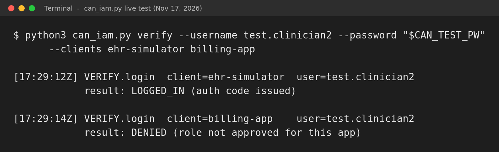
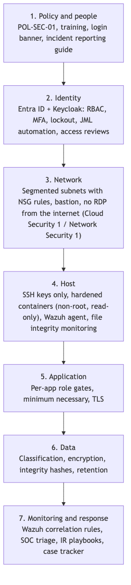

Source: diagrams/zero_trust.mmd
| Prepared by: | Akhila Chennamaneni, IAM & GRC Analyst (author) |
| Organization: | HealthLine Regional Medical Center (HRMC), Care Access Navigator (CAN) capstone |
| Course: | Cybersecurity Basics 2 (DAE 6-Month Cybersecurity, Cohort 2) |
| Scope: | All rubric criteria |
| Environment: | Entra ID + Keycloak (capstone), Wazuh with live Linux agent, IR1 forensic lab, CISO Assistant |
| Date: | November 19, 2026 |
| Rubric criterion | Section | Main evidence |
|---|---|---|
| Implement and Explain Advanced Cybersecurity Defense Strategies | 1 | Zero Trust across 4 layers (tests), defense in depth (7 layers), supply-chain case (172 → 0 vulnerabilities), Clark-Wilson model applied |
| Implement Incident Response and Handling | 2 | 5-step IRP, Volatility 3 + dc3dd, chain of custody (IR1 13 items; CB2 3 items), 3 incident types triaged, post-incident lessons |
| Demonstrate SOC Fundamentals | 3 | 4 SOC roles, Wazuh with a live agent (2 network activity types), 2 alerts generated → investigated → resolved, threat analysis |
| Develop and Implement Security Policies and Governance | 4 | POL-SEC-01 (access control, data protection, system use), RACI, NIST CSF / ISO 27001 / HIPAA references, banner + enforcement evidence |
| Produce Effective Security Documentation | 5 | PROC-SEC-03, GUIDE-SEC-01, playbooks PB-01 / PB-02, knowledge base with 7 categories |
Zero Trust means never trust, always verify: no user, device or network location is trusted by default, every request is checked against identity, role and context, and access is the minimum needed. In the capstone, a request has to pass four layers, each able to stop it on its own:
| Layer | Control (Care Access Navigator) | Evidence that it is enforced |
|---|---|---|
| 1. Identity provider (Entra ID) | Assignment required on the Keycloak broker app; MFA via Security defaults; app roles carry the job role | Control test AC-01 #3 'Entra assignment required' PASS (audit CAN-IA-2026-01); EV-17 Security defaults; leaver Jeevan Smith refused at Microsoft sign-in |
| 2. Identity broker (Keycloak) | Role mapped from Entra with sync FORCE; MFA for privileged and payment roles; lockout after 10 failures | Screenshot CB2-03: billing user MFA_REQUIRED; test.vendor1 locked after 10 failures; CAN-ID-001 brute-force alert |
| 3. Application gate | Each app admits only approved roles (EHR: clinician, nurse; Billing: billing) | Screenshot CB2-02: clinician LOGGED_IN to the EHR but DENIED on billing-app |
| 4. Continuous verification | Wazuh correlates sign-ins, record access and connections; a session is not trusted just because it started | SOC 1 and Security Monitoring 1: cross-source rule 100650, account-compromise rule 100507 |
| Host (servers) | SSH keys only, MaxAuthTries 3, system-use banner (added 2026-11-19) | Password login refused: 'Permission denied (publickey)' (section 3.3) |


Defense in depth layers different controls so that one failure is caught by the next. HRMC uses seven layers; at least three of them stopped or exposed each attack in the labs:

| Attack (lab) | Layers that acted |
|---|---|
| Leaver Jeevan Smith tried to sign in (capstone JML) | Identity (Entra disabled) → identity broker (Keycloak copy disabled, after the 12-minute gap) → monitoring (CAN-ID-002) |
| SSH password guessing on hrmc-linux-srv01 (CB2-2026-001) | Monitoring (5763, 40112) → host (keys only, account locked) → policy (banner, PB-01) |
| Billing account reading EHR exports and sending them out (SM1-SCN-01) | Application (billing not approved for clinical data, 100521) → data (FIM / object-access logging) → monitoring (100651 level 15) |
| Before (baseline image) | After (hardened image) | |
|---|---|---|
| Base image | python:3.12-slim (general-purpose, unpinned tag) | Chainguard Python, pinned by sha256 digest, multi-stage build |
| Known vulnerabilities (Trivy, 2026-10-06) | 172: 44 High, 63 Medium, 63 Low, 2 Unknown | 0 |
| Software bill of materials | none | CycloneDX SBOM, 39 components (reports/hardened/sbom.cdx.json) |
| Runtime | root, writable, shell + pip present | UID 65532, read-only filesystem, all capabilities dropped, no-new-privileges, no shell, no pip |
Risk: third-party code inherited through the container base image (and through any later tag change upstream). Mitigation: minimal base, digest pinning
(the build cannot silently change), vulnerability scanning in the build, SBOM for future CVE look-ups, and a locked-down runtime. Source: Cloud Security 1, Criterion 3
(cloud_security_1/can-ehr-container/). The pinned base image is kept locally so the build stays reproducible.
Healthcare needs integrity as much as confidentiality: a wrong role or a changed record harms patients. Bell-LaPadula (no read up, no write down) protects confidentiality with security levels; HRMC uses its idea only for data classification labels (Restricted, Confidential, Internal, Public). Clark-Wilson protects integrity through well-formed transactions and separation of duties, which is exactly how access is managed in the capstone:
| Clark-Wilson element | Care Access Navigator implementation |
|---|---|
| CDIs (constrained data items) | Access entitlements (Keycloak role mappings and groups), EHR patient records, billing records |
| UDIs (unconstrained data items) | Access requests from managers, raw log data, imported files |
| TPs (transformation procedures) | can_iam.py joiner / mover / leaver (the only way entitlements change, with a ticket); EHR application functions behind the role gate |
| IVPs (integrity verification procedures) | Quarterly access review AR-2026-Q4 (16/16 accounts signed), can_iam.py verify, end-to-end tests TC-01 to TC-10, FIM hash checks |
| Certification rule: separation of duties | Approver (the department manager) ≠ implementer (IAM analyst), both recorded per ticket in JML-LOG.csv; SoD rules in CAN_DOC_RBAC_SoD_Access_Request_v1.0 |
| Certification rule: TPs log what they do | Append-only can_iam_audit_log.jsonl, hashed into the evidence index |
| Enforcement rule: only TPs change CDIs | Users cannot change their own roles; Keycloak admin is restricted (EX-03 / EX-04 govern the gaps) |
| Enforcement rule: users are authenticated | Entra MFA (Security defaults) and Keycloak OTP for privileged roles |
| Enforcement rule: user → TP → CDI triples | Role → application client → data: a clinician reaches EHR records only through the EHR app; billing cannot (CB2-02) |
Result: the leaver gap found in the capstone (Keycloak copy still enabled 12 minutes after the Entra disable) was exactly a Clark-Wilson IVP failure caught by verification, and is tracked as finding CAN-FIND-001 until automatic deprovisioning is built.
| Step | What HRMC does | Where it is defined / proven |
|---|---|---|
| 1. Preparation | Playbooks, tracker, Wazuh rules and email routing, evidence store, roles (IC, Privacy Officer), training | IR1 playbook CAN-IR-PB-02; PB-01 / PB-02 (section 5); SOC 1 rules; irtrack.py |
| 2. Identification | Alert triage, validation, severity = Impact × Urgency, open a case | IR1 Task 2 (3 incidents); SOC 1 and SM1 scenarios; cases CB2-2026-001/002 |
| 3. Containment | Short-term (lock account, block IP, isolate host) then long-term; preserve evidence first | IR1 Task 3 (VM isolated to quarantine network); CB2: account locked, staged file preserved |
| 4. Eradication | Remove the cause and persistence; fix the weakness | IR1 Task 6 (keys removed, sudo cleaned); CB2: SSH keys-only, staged file removed |
| 5. Recovery | Restore known-good state, validate, monitor closely | IR1 Task 6: validation 34/34 + 6/6 network probes; CB2: hash of restored file matches known-good |
Post-incident review closes every case (section 2.5). Full plan: incident_response_1/task5_ir_documentation/playbook/CAN-IR-PB-02_Host_Incident_Response_Playbook.md.
| Tool | Used for | Result (IR1-2026-002) |
|---|---|---|
| Volatility 3 | Memory analysis of the RAM image (E01: {e(e01['description'])}) | Found the uploader process (PID 1534) with its SSH session origin, a SYN_SENT socket to the drop site and the patient record in its heap; no rootkit indicators |
| dc3dd | Forensic disk image from a read-only source, hashing while copying | Image hash equal to source hash; Sleuth Kit recovered the planted files byte-identical |
| tshark / tcpdump | Packet capture at host and hypervisor | Captures of the upload traffic to the drop site (E03, E04 in the register) |
| sha256sum (CB2) | Hashing the staged file before removal | Host and case copies match (section 2.3) |
IR1-2026-002 (Incident Response 1, Task 4): 13 evidence items of different forms (RAM image, process core, packet captures, disk image, logs), 54 custody events, each with a hash check.
| Item | Time (UTC) | Event | By | Hash check |
|---|---|---|---|---|
| E01 | 2026-11-03T19:32:32Z | ACQUIRED | A. Chennamaneni (IR analyst, account ir-analyst) | sha256 recorded |
| E01 | 2026-11-03T19:32:32Z | STORED | A. Chennamaneni (IR analyst, account ir-analyst) | file set read-only |
| E01 | 2026-11-03T19:37:19Z | VERIFIED (intake to Task 4) | A. Chennamaneni (IR analyst, account ir-analyst) | OK |
| E01 | 2026-11-03T19:37:38Z | EXAMINED | A. Chennamaneni (IR analyst, account ir-analyst) | hash before = after |
| E01 | 2026-11-03T19:39:40Z | VERIFIED (report build) | A. Chennamaneni (IR analyst, account ir-analyst) | MATCH |
| E02 | 2026-11-03T19:32:32Z | ACQUIRED | A. Chennamaneni (IR analyst, account ir-analyst) | sha256 recorded |
CB2 cases (this course, 2026-11-19): three items in three forms (log transcript, file, alert export).
| Item | Case | Description | SHA-256 | Integrity |
|---|---|---|---|---|
| E01 | CB2-2026-001 | Remediation transcript (lock, sshd settings, re-tests, FIM restore) | fd849567f108ebdb… | hash recorded in tracker matches |
| E02 | CB2-2026-002 | Staged file staged_all_exports.csv (attacker copy of the EHR export share) | faef379a71630e49… | MATCH host = case copy |
| E03 | CB2-2026-001/002 | Wazuh alerts for hrmc-linux-srv01, attack and remediation (indexer export) | 0d31dc18ebd1a423… | hash recorded |
Custody log: cybersecurity_basics_2/evidence/cb2_custody_log.csv. Evidence is copied before anything is removed, hashed at acquisition and re-hashed when moved; the tracker stores the hash of E01 and it still matches.
| Incident (IR1) | Type | Impact | Urgency | Severity | Business impact |
|---|---|---|---|---|---|
| IR1-2026-002 | Unauthorized ePHI access by a mover (old clinical group kept), record sent off the host | 3 | 3 | SEV-1 (9) | HIPAA breach risk assessment, patient notification possible, regulator reporting |
| IR1-2026-003 | Unapproved privilege: a joiner given sudo without a change record, used root | 3 | 2 | SEV-2 (6) | System integrity in doubt; audit finding; possible persistence |
| IR1-2026-001 | Leaver login attempts (blocked, but SSH key still on the host) | 2 | 2 | SEV-3 (4) | No access gained; control weakness to fix |
Severity = Impact × Urgency (each 1-3), NIST SP 800-61 prioritization factors; SEV-1 start within 15 min, SEV-2 60 min, SEV-3 8 h. Today's CB2 cases were rated SEV-2 (server access gained, no ePHI confirmed read).
| Case | Outcome | Lessons learned |
|---|---|---|
| IR1-2026-002 (SEV-1) | Contained by isolating the VM; recovered from the baseline snapshot; validation 34/34 checks and 6/6 network probes, before and after reboot | 1. A mover's old groups must be removed before new access is added (JML control fixed by recover_harden.sh). 2. Leavers need their SSH keys removed, not only their account disabled. |
| CB2-2026-001 (SEV-2) | Closed: account locked, SSH keys only, re-test refused the password; response 5.9 min (target 60) | 3. Password-only SSH is guessed within seconds: keys only on all servers (PROC-SEC-03). 4. Containment waited 21 h because the compromise was kept for the Security Monitoring 1 evidence; in production containment must start within the SLA. |
| CB2-2026-002 (SEV-2) | Closed: staged copy preserved and removed, deleted export restored, hash matches known-good | 5. Egress allow-lists on servers would have blocked the outbound connection (100630). 6. Keep FIM on every ePHI folder: it was the only record of the staging. |
| Role | Responsibilities | In the HRMC labs |
|---|---|---|
| Tier 1 SOC analyst | Watch the dashboard and alert email, triage, open cases, escalate by severity | Triaged SOC1-2026-001 in 4.2 min; CB2 cases in under 6 min |
| Tier 2 incident responder | Investigate, contain, eradicate, recover; collect evidence | Contained and resolved CB2-2026-001/002; IR1 containment and forensics |
| Tier 3 threat hunter / detection engineer | Write and tune rules, hunt for undetected threats, test detections | Wrote SOC 1 and SM1 rules (100500-100651), found and fixed the rule-load-order defect |
| SOC manager / lead | Escalation point, metrics, reporting, shift handover, staffing | Receives level 12+ email; shift handover form (SOC 1); metrics (SM1) |
Main SOC functions: continuous monitoring, alert triage, incident response, threat intelligence and hunting, detection engineering, reporting and compliance support. In the lab one person (the author) performed all four roles.
Tool: Wazuh 4.9.2 with the live agent hrmc-linux-srv01 (configured in Security Monitoring 1). Network activity monitored on it:
| Network activity | How Wazuh sees it | Real example |
|---|---|---|
| Inbound remote logins (SSH, TCP 22) | auth.log via the agent: every failed and accepted login with source IP and port | 8 failed logins from 172.21.0.7 then 'Accepted password for tjones' (40112); after hardening 'Accepted publickey for sathya' (5715) |
| Outbound TCP connections | Agent command every 30 s lists established and pending connections; rule 100630 flags known-bad addresses | 172.21.0.6:53766 -> 203.0.113.77:443 (100630, level 12) |
| Windows network connections (imported samples) | Event 5156 with application and destination; rule 100621 | rclone.exe -> 203.0.113.77:443 (SM1) |


| Alert 1: SSH brute force → compromise (CB2-2026-001) | Alert 2: EHR export staging (CB2-2026-002) | |
|---|---|---|
| Generated | 5763 (L10) 2026-11-18 19:16:26 UTC; 40112 (L12) 19:16:30 UTC; email to Tier 1 | 554 (L5) staged file added 19:16:29; 553 (L7) export deleted 19:16:31; 100630 (L12) outbound 19:16:56 |
| Investigated | Same source failed 8 times then succeeded: true positive; SEV-2; triage 19:22:19 (5.9 min) | Same host and minute as alert 1; staged file = all exports combined; linked case |
| Contained | 2026-11-19 16:32:30: passwd -l tjones, shell nologin | 16:33:10: staged file preserved in /root/ir_evidence, hashed |
| Resolved | 16:32:31: SSH keys only, MaxAuthTries 3, banner; re-test refused the password | 16:33:16: staged file removed, export_1.csv restored; hash = known-good |
| Closed | 16:40 UTC, lessons recorded | 16:40 UTC, lessons recorded |
: password guessing is now refused (attacker retries tjones with the old guessed password) *************************************************************************** HealthLine Regional Medical Center - AUTHORIZED USE ONLY This system holds protected health information (ePHI). Use is limited to approved HRMC work under the HRMC Information Security Policy (POL-SEC-01), section 4 "System Use". All activity is logged and monitored. Misuse may lead to disciplinary action and legal penalties (HIPAA). *************************************************************************** tjones@hrmc-linux-srv01: Permission denied (publickey). == VERIFY 2: legitimate key login for sathya shows the system-use banner *************************************************************************** HealthLine Regional Medical Center - AUTHORIZED USE ONLY This system holds protected health information (ePH
| Analysis step | Credential guessing against hrmc-linux-srv01 |
|---|---|
| Threat | Online password guessing (MITRE ATT&CK T1110.001) followed by valid-account use (T1078) and staging / exfiltration (T1074, T1041) |
| Indicators | Source 172.21.0.7; 8 'Failed password' lines in about 35 s; success from the same source; new file in /srv/ehr_exports; connection to 203.0.113.77:443 |
| How it was detected | Wazuh built-in rules 5760 → 5763 (frequency) → 40112 (correlation: failures then success); FIM real-time 554 / 553; custom rule 100630 on the connection list |
| Why it worked | Password authentication enabled on SSH; weak, guessable password; no egress filtering |
| Impact | Server access as a normal user; synthetic export files staged; possible transfer (SEV-2) |
| Response | PB-01 and PB-02; cases closed with evidence (section 3.3) |
| Detection improvement | Add a rule for any new file in ePHI folders outside a change window (level 10), and raise 100630 to level 13 when it follows 40112 on the same host |
Policies follow a four-level structure: policy (what is required, approved by the board committee) → standards (measurable settings, e.g. 12-character passwords) → procedures (how to implement, e.g. PROC-SEC-03) → guides (how users comply, e.g. GUIDE-SEC-01). Life cycle: draft by the CISO's team, review by Privacy, IT, HR and Legal, approval by the Compliance & Privacy Committee, publication and training, annual review, exceptions with expiry. The policy below covers the three required areas.
| Organization | HealthLine Regional Medical Center (HRMC) (fictional capstone hospital) |
|---|---|
| Owner | Chief Information Security Officer (CISO) |
| Approved by | Compliance & Privacy Committee, on behalf of the Board |
| Version / date | 1.0, 2026-11-19 |
| Review | Every 12 months, or after a major incident or regulatory change |
| Applies to | All workforce members, students, contractors and vendors who use HRMC systems or data |
Protect the confidentiality, integrity and availability of patient, payment and workforce information, and meet HIPAA,
PCI DSS and contractual obligations. This policy sets the rules; standards and procedures say how to meet them.
| Role | Responsibility for this policy |
|---|---|
| Board of Trustees / Compliance & Privacy Committee | Approve the policy, accept residual risk, receive quarterly metrics |
| CISO (HIPAA Security Official) | Own the policy, approve exceptions, report compliance |
| Privacy Officer | Data protection rules, breach risk assessments |
| IAM Analyst | Role groups, joiner/mover/leaver, MFA, lockout, access reviews |
| Security Analyst (SOC) | Monitoring, alert triage, incident response, enforcement evidence |
| GRC Analyst | Control mapping, evidence, audits, exception register |
| Department managers | Approve access, complete access reviews, enforce in their teams |
| HR | Leave dates, sanctions, training records |
| All users | Follow the policy, complete training, report incidents |
| Section | NIST CSF 2.0 | ISO/IEC 27001:2022 Annex A | HIPAA Security Rule |
|---|---|---|---|
| 2 Access control | PR.AA-01, PR.AA-05 | A.5.15, A.5.18, A.8.5 | 164.308(a)(4), 164.312(a)(1), 164.312(d) |
| 3 Data protection | PR.DS-01, PR.DS-02 | A.5.12, A.8.24, A.5.33 | 164.312(c)(1), 164.312(e)(1) |
| 4 System use | GV.PO-01, PR.AT-01, DE.CM-03 | A.5.10, A.6.3, A.8.16 | 164.308(a)(5), 164.312(b) |
| 5 Governance | GV.RR-02 | A.5.2, A.5.4 | 164.308(a)(2) |
Exceptions need a business reason, compensating controls, an owner and an expiry date, and are approved by the CISO and
recorded in the exception register (CISO Assistant). Expired exceptions are escalated automatically.
Technical controls enforce this policy where possible (Keycloak role gates, MFA, lockout, SSH keys only, file integrity
monitoring, Wazuh alerting). Violations are handled under the HR sanctions policy and, where required, reported to regulators.
The policy is published on the intranet, taught in onboarding and annual security training, acknowledged by each user,
and repeated at every login through the system-use banner.
Roles and responsibilities are in policy section 5 (based on the Compliance 1 RACI); compliance references to NIST CSF 2.0, ISO/IEC 27001 and HIPAA are in section 6. How the policy is communicated and enforced in the systems:
| Policy rule | Communicated by | Enforced by (evidence) |
|---|---|---|
| 2.1 Least privilege by role | Policy, onboarding, access request form | Keycloak app gate: clinician DENIED on billing-app (CB2-02); quarterly review 16/16 signed |
| 2.3 MFA and lockout | Policy, sign-in prompts | MFA_REQUIRED for billing; lockout after 10 failures (CB2-03) |
| 2.3 / 4.5 Servers: SSH keys only, banner | Login banner on every SSH login naming POL-SEC-01 section 4 | sshd: PasswordAuthentication no; password login refused (section 3.3) |
| 2.4 Leavers removed and verified | JML procedure, HR process | Leaver Jeevan Smith disabled in Entra and Keycloak; gap tracked CAN-FIND-001 |
| 3.4 Integrity of ePHI folders | Policy, data owner briefing | Wazuh FIM real-time on /srv/ehr_exports (553 / 554 alerts) |
| 3.6 No unapproved transfer tools | Policy, training | Wazuh rules 100621 / 100651 flag rclone to a bad address (SM1) |
| 4.4 All use logged and monitored | Banner text | Wazuh SIEM, dashboard 'HRMC Security Monitoring', email alerts to the SOC |
| 7 Exceptions with expiry | Exception register | CISO Assistant exceptions EX-01..EX-08; expired ones escalated automatically (Compliance 2) |
| Control | Strong authentication for server access (POL-SEC-01 sections 2.3 and 4.5) |
|---|---|
| Standards | NIST CSF 2.0 PR.AA-03; ISO/IEC 27001 A.8.5; HIPAA 164.312(d); CIS Debian benchmark (SSH section) |
| Owner | IT-Support (servers), verified by the Security Analyst |
| First implemented | 2026-11-19 on hrmc-linux-srv01 (case CB2-2026-001) |
Stop password guessing against servers, show the system-use policy at every login and keep a record that the control works.
cp -a /etc/ssh /root/ssh-backup-$(date +%F)~/.ssh/authorized_keys; folder permission 700, file 600, owned by the user./etc/issue.net (file lab/system_use_banner.txt)./etc/ssh/sshd_config.d/10-hrmc-hardening.conf:PasswordAuthentication no KbdInteractiveAuthentication no PermitRootLogin no MaxAuthTries 3 LoginGraceTime 30 Banner /etc/issue.net
sshd -t must print nothing. If it shows an error, fix it and do not continue.systemctl reload ssh, or kill -HUP $(cat /run/sshd.pid) on hosts without systemd).sshd -T | grep -E 'passwordauthentication|permitrootlogin|maxauthtries|banner' shows the values abovePermission denied (publickey)Copy the backup from step 1 back to /etc/ssh, run sshd -t, then reload.
cybersecurity_basics_2/evidence/remediation_transcript.txt: password login refused, key login with banner, tjones
locked, effective settings listed.
Use this guide if you think something is wrong: a strange email, a lost device, someone using your account, patient
data sent to the wrong person, or a warning on your screen. Report first; you do not need to be sure.
security@hrmc.lab (only if email still works and is not the problem).The SOC opens a case (for example CB2-2026-001), sets a severity, and contains and investigates it under the incident
response plan (IRP). If patient data may be involved, the Privacy Officer assesses whether a HIPAA breach notification is needed.
You will be told when the case is closed.
| Triggers | Wazuh 5763 / 5551 (SSH brute force), 40112 (failures then success), 100502 / 100507 (Keycloak guessing then success), 100602 / 100604 (Windows guessing, RDP from outside) |
|---|---|
| Default severity | SEV-3 if all attempts failed; SEV-2 if a login succeeded; SEV-1 if ePHI was then accessed |
| Owner | Tier 1 SOC analyst; Tier 2 / Incident Commander for SEV-1/2 |
| Example | CB2-2026-001 (tjones on hrmc-linux-srv01, closed 2026-11-19); SOC1-2026-001 (test.nurse2) |
irtrack.py new), with the alert IDs and times.passwd -l, Keycloak / Entra: disable and revoke sessions).Record the timeline, actions and evidence; write at least 2 lessons; tune rules if they were noisy or late.
| Triggers | Wazuh 100612 (mass EHR export reads), 100651 (mass reads then connection to a bad address), 100630 / 100621 (connection to a known-bad address), FIM 553 / 554 / 550 on ePHI folders, 100522 (bulk EHR access) |
|---|---|
| Default severity | SEV-1 if ePHI may have left HRMC; SEV-2 if it was staged but not sent |
| Owner | Incident Commander; Privacy Officer from the start |
| Example | CB2-2026-002 (staging on hrmc-linux-srv01, closed 2026-11-19); SM1-SCN-01 (rclone to 203.0.113.77) |
A third playbook with six runbooks (CAN-IR-PB-02, Incident Response 1) is in the knowledge base as PB-03.
Location: cybersecurity_basics_2/kb/README.md (index) with sub-folders policies/, procedures/, guides/, playbooks/.
Every entry has an ID scheme by category, and every link was checked to point to an existing file in the repository (20 of 20).
Structured repository of security references for HealthLine Regional Medical Center (Care Access Navigator capstone).
Every entry has an ID, an owner and a location. Paths are relative to the repository root.
| ID scheme | Category | Use it when |
|---|---|---|
| POL-* | 1. Policies | You need the rule: what is required |
| PROC-* | 2. Procedures | You implement or operate a control |
| GUIDE-* | 3. Guides | You are a user who needs to do something step by step |
| PB-* | 4. Playbooks | You respond to an incident |
| STD-* / REF-* | 5. Standards, mappings and registers | You map, audit or report compliance |
| TOOL-* | 6. Tools and lab references | You run or rebuild a security tool |
| LL-* | 7. Lessons learned | You plan improvements or train others |
| ID | Title | Location |
|---|---|---|
| POL-SEC-01 | Information Security Policy (access control, data protection, system use) | cybersecurity_basics_2/kb/policies/POL-SEC-01_Information_Security_Policy.md |
| POL-SEC-02 | Authentication and Privileged Access (capstone) | Care_Access_Navigator/07_GRC/02_Controls/CAN_DOC_Authentication_and_Privileged_Access_v1.0.pdf |
| ID | Title | Location |
|---|---|---|
| PROC-SEC-01 | Joiner / mover / leaver with can_iam.py | Care_Access_Navigator/10_Scripts/02_IAM_Automation/README.md |
| PROC-SEC-02 | Quarterly access review | Care_Access_Navigator/06_Evidence/05_Access_Reviews/ |
| PROC-SEC-03 | Linux server SSH hardening | cybersecurity_basics_2/kb/procedures/PROC-SEC-03_SSH_Hardening.md |
| PROC-SEC-04 | Container hardening and image scanning (supply chain) | cloud_security_1/can-ehr-container/ + Cloud Security 1 Criterion 3 PDF |
| ID | Title | Location |
|---|---|---|
| GUIDE-SEC-01 | How to report a security incident (all staff) | cybersecurity_basics_2/kb/guides/GUIDE-SEC-01_Reporting_a_Security_Incident.md |
| GUIDE-SEC-02 | Parrot OS incident-response tools and commands | incident_response_1/task5_ir_documentation/tools/PARROT_IR_TOOLS.md |
| ID | Title | Location |
|---|---|---|
| PB-01 | Account compromise | cybersecurity_basics_2/kb/playbooks/PB-01_Account_Compromise.md |
| PB-02 | Data exfiltration from ePHI stores | cybersecurity_basics_2/kb/playbooks/PB-02_Data_Exfiltration.md |
| PB-03 | Host incident response, runbooks RB-01 to RB-06 | incident_response_1/task5_ir_documentation/playbook/CAN-IR-PB-02_Host_Incident_Response_Playbook.md |
| ID | Title | Location |
|---|---|---|
| STD-01 | Control catalogue and framework mapping (HIPAA, NIST CSF 2.0, SP 800-53, ISO 27001, PCI DSS) | Care_Access_Navigator/07_GRC/02_Controls/CAN_DOC_Control_Catalog_and_Mapping_v1.0.xlsx |
| STD-02 | Unified control map incl. GDPR and India DPDP | compliance_2/HRMC_Compliance2_Workbook.xlsx (sheet Unified_Controls) |
| REF-01 | Risk register R01-R05 and treatment plan | Care_Access_Navigator/07_GRC/01_Risks/ |
| REF-02 | HIPAA audit and NIST CSF mapping (CISO Assistant exports) | Care_Access_Navigator/07_GRC/03_Compliance/ |
| REF-03 | Exceptions and corrective actions | Care_Access_Navigator/07_GRC/04_Remediation/ |
| ID | Title | Location |
|---|---|---|
| TOOL-01 | Wazuh SOC rules (SOC 1) | security_operations_center_1/wazuh_config/soc1_rules.xml |
| TOOL-02 | Wazuh monitoring rules, dashboard, health check (Security Monitoring 1) | security_monitoring_1/ |
| TOOL-03 | Incident tracker irtrack.py | incident_response_1/task5_ir_documentation/tracker/irtrack.py |
| TOOL-04 | Compliance workflow with AI triage | compliance_2/automation/compliance_workflow.py |
| ID | Lesson | Source |
|---|---|---|
| LL-01 | Federation copies identities: each copy needs its own leaver control (12-minute Keycloak gap) | Capstone JML, CAN-FIND-001 |
| LL-02 | Configured is not working: test the person who should be stopped | Capstone Week 5 hardening |
| LL-03 | Test every rule end to end: rule-file load order silently disabled a correlation rule | Security Monitoring 1, rule 100650 |
| LL-04 | Monitor the monitoring platform: a feed download filled the disk; an agent stopped after a config push | Security Monitoring 1, section 3.6 |
| LL-05 | Password-only SSH on servers is guessable within seconds; keys only | CB2-2026-001 |